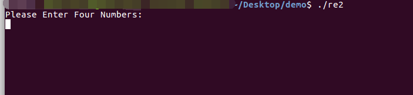

ctf
2019-06-11
2019-06-11
符号执行工具比较常用有Angr,z3(约束求解)
安装：
windows:
(这里参考某大佬的blog：https://blog.csdn.net/qq_43500877/article/details/89035959)
1 | #py2的环境 |
发现可以运行，但是之前有听说过angr在windows上面运行有时候会出问题，所以我在ubuntu的虚拟机中也装了
unbuntu 16.04:
(参考：https://www.jianshu.com/p/5df6c4567a7d)
1 | #首先是安装一个依赖环境 |
使用:
一个示例二进制程序：
re2
首先运行发现：

然后进IDA中静态分析发现：
进calc函数看一下发现是许多个的算法。
发现以我的水平手工估计是不太可能了，所以直接上我们的符号执行工具去让他自动的找出最正确的路径
首先就是引用库
1 | import angr |
其次就是装载我们的二进制文件
1 | p = angr.Project('./re2',auto_load_libs=False) |
获取下程序的初始状态：
1 | state = p.factory.entry_state() |
遍历程序的全部路劲：
1 | simgr=p.factory.simgr(state) |
开始设置我们的条件：
1 | #这里的find对应的是我们输入正确答案后的结果，反之avoid就是需要排除的那条路径 |
然后会等一会儿，接着就会出现：
发现找到了一条正确的路径
接着我们就可以把这个符合posix环境的数据dump出来
1 | simgr.found[0].posix.dumps(0) |
发现成功得到答案。
使用2(输入的值是参数):
示例题目(来自蓝鲸安全)：
ais3_crackme
先用IDA看一下
我们发现agrv[1]这里需要使用参数进行输入才可以
开始敲：
开头还是这样，获取一下程序的状态
1 | p = angr.Project('./ais3_crackme',auto_load_libs=False) |
然后就是我们需要设置一个参数
这里使用一个叫库claripy,它里面的函数claripy.BVS可以创建一个制定长度的二进制数据，有两个参数，第一个是函数名称，第二个就是他的长度
1 | import claripy |
接着就是获取程序的初始状态：
1 | state=p.factory.entry_state(args['./ais3_crackme',argv1]) |
然后就是遍历一下我们的路径：
1 | simgr=p.factory.simgr(state) |
开始跑：
1 | simgr.explore(find=0x400602,avoid=0x40060E) |
但是我们前面的参数是二进制的，所以我们需要对结果进行转换一下：
1 | simgr.found[0].solver.eval(argv1) |
这时候使用它的内置的参数
内置参数：
1 | simgr.found[0].solver.eval(argv1,cast_to=str) |
OK，结果就出来了。